Convert Your GPX Files Into 3D Printed Maps
Free Addon for the open-source modeling software Blender · No Accounts · No Tracking · Full Control


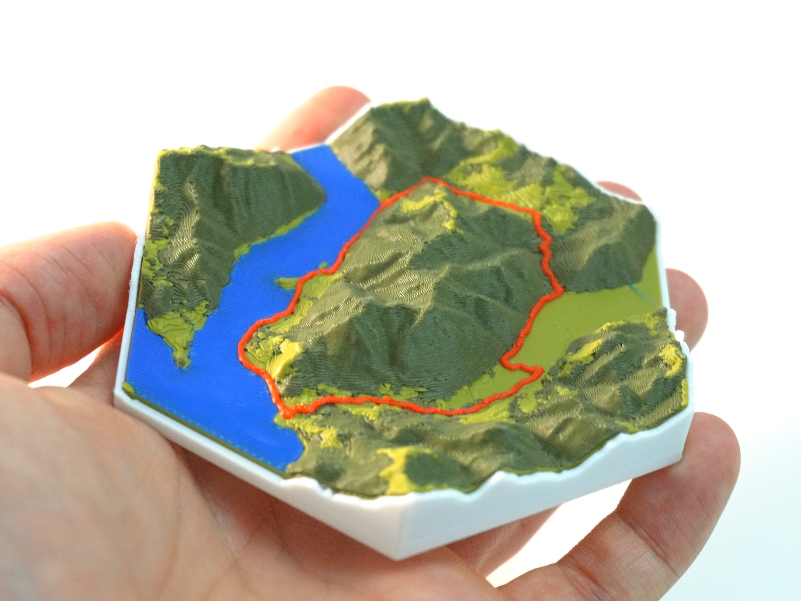
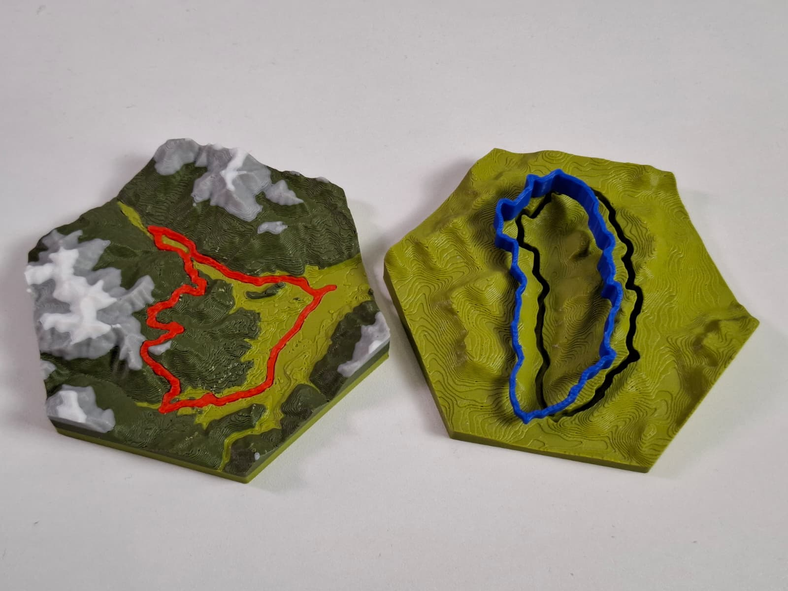
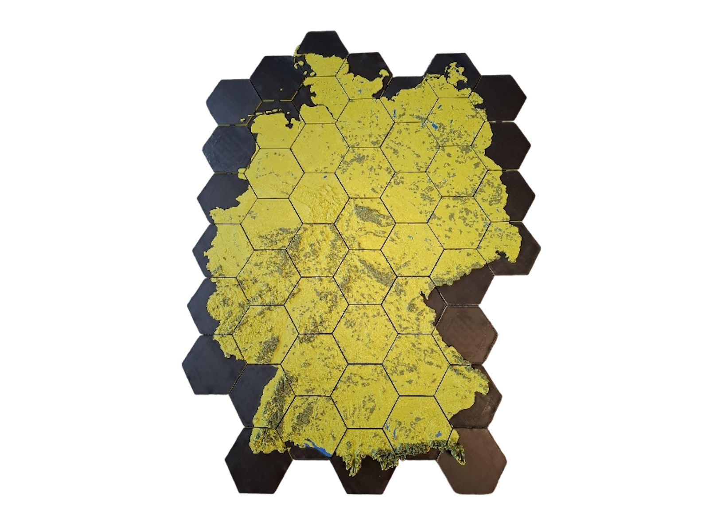
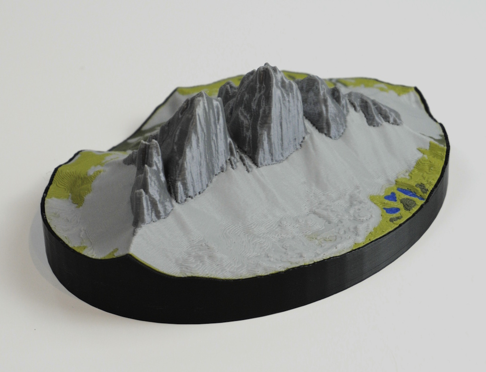
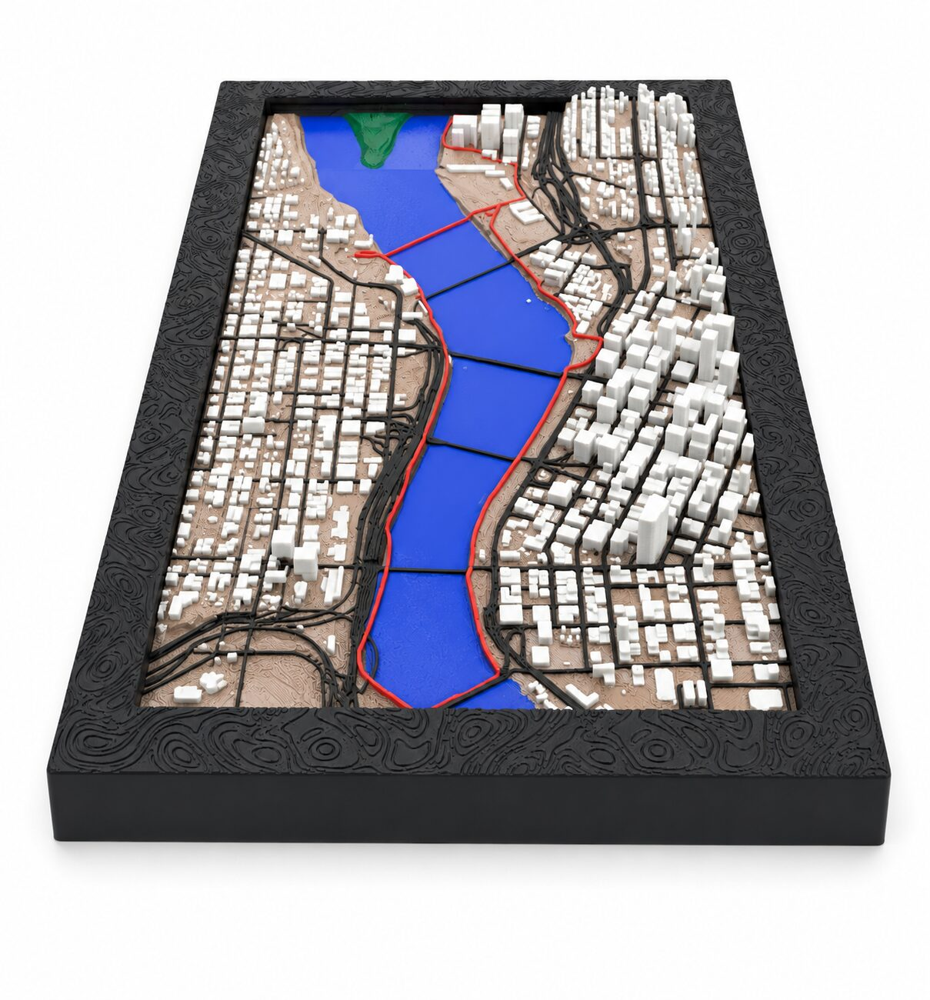
Free Addon for the open-source modeling software Blender · No Accounts · No Tracking · Full Control





Simple Process
Three steps to turn your outdoor memory into a physical keepsake.
Head out on any hike, bike, or trail run and record your tour using Apps like Strava or Komoot.
Open Blender, install the TrailPrint3D add-on, load your GPX file, set a few parameters, and watch your track become a detailed 3D terrain mesh.
Export a print-ready files to your slicer and bring your adventure to life as a physical object you can hold and display.
What You Get
Real-world data, powerful tools, and premium extras. everything you need to print your adventures.

Terrain meshes built from real elevation data. every ridge, valley, and summit accurately represented.

Real-world data colors your map automatically. lakes, rivers, forests, and cities all included.
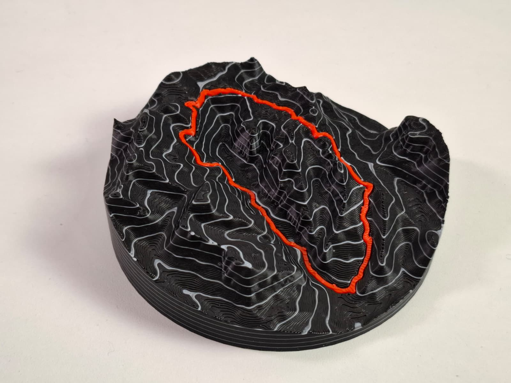
Add real-world-scaled elevation contour lines to your map, precise down to every meter of elevation gain.

Reduces waste, speeds up printing, and works great with single-color printers. clean and efficient.

Choose and configure frames to finish your map with a polished, display-ready look.
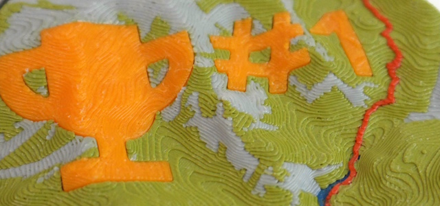
Fine-tune scale, elevation exaggeration, base thickness, and dozens of other parameters to get exactly the map you want, or add Custom text and Icons to it

Print your map as a square, circle, hexagon, and more

Turn any location into a jigsaw puzzle you can piece together and display.

Add real building footprints and road networks to your terrain for rich, detailed urban maps.

This add-on may be used commercially — sell prints, use them as gifts, or include them in products.
Data sources such as OpenStreetMap may have their own license requirements. Users are responsible for complying with them. Learn more

No accounts, no tracking, no personal data collected. The add-on fetches only the map and elevation data needed to generate your model — nothing else is sent or stored.

Use Multiple GPX files to fit on one map. For Multi Day Trips or to map down a whole region

Split large areas across multiple print tiles that connect seamlessly for wall-scale terrain maps.
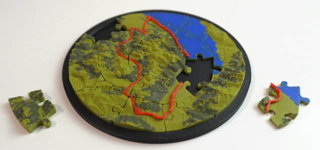
Piece shapes beyond the classic grid — hexagonal and concentric-ring puzzle pieces for a completely different look.
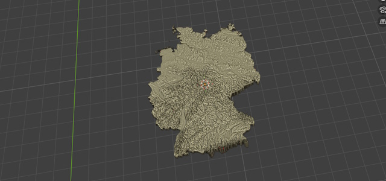
Use GeoJSON files as your shape so you can create Maps with the Shape of Countries or other Shapes
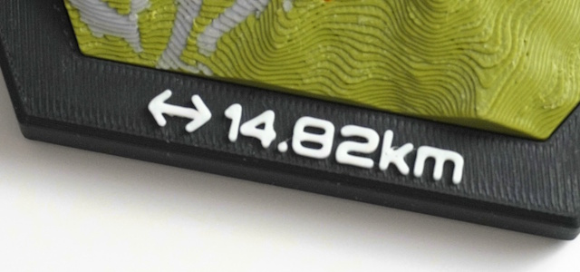
Add text-based icons and lettering to your map for personalized medals, plaques, and displays.
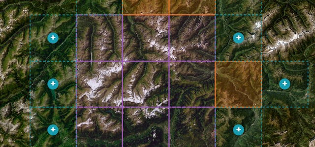
Create Multi-tile maps interactively in a Browser based 2D map
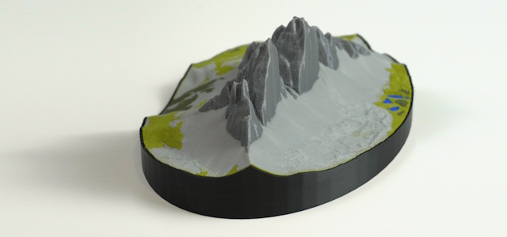
A Shell for your map that can be printed separately as a nice visual Upgrade
Start with the free version or unlock the full feature set with premium.
FAQ
Install TrailPrint3D in Blender, click "Generate", and select your GPX file. The add-on automatically downloads real elevation data for your route and builds a 3D terrain mesh you can export and 3D print.
Yes. Export your activity as a GPX file from Strava, Komoot, Garmin, or any GPS app. TrailPrint3D supports any standard GPX file.
TrailPrint3D exports STL, OBJ and 3mf files, which are compatible with all major slicers like PrusaSlicer, Bambu Studio, and Cura.
Yes!the core add-on is completely free to download on MakerWorld and Printables. A Premium version unlocks advanced features like multi-GPX maps and multi-tile printing.
TrailPrint3D runs inside Blender, which is available on Windows, macOS, and Linux, so yes, it works on all platforms.
Yes. TrailPrint3D includes commercial use rights, so you can sell prints, use them for gifts, or include them in products. Note that data obtained through the add-on (such as OpenStreetMap or other providers) is subject to the respective provider's license and terms, which may include attribution or other requirements. Users are responsible for ensuring compliance with those terms. See the Attribution page for details.